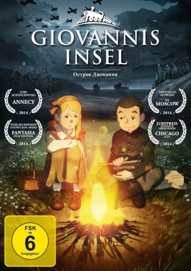

#457 Giovannis Insel
 
 IMDB-Wertung: 7.4 / 10
IMDB-Wertung: 7.4 / 10  Metascore: 0
Metascore: 0 
Kurz nach Ende des Zweiten Weltkriegs auf einer Insel im Norden Japans: Junpei lebt zusammen mit seinem jüngeren Bruder Kanta, ihrem Vater und ihrem Großvater auf eben diesem Eiland. Der Alltag der Einwohner war unbeschwert und friedlich, bis eines Tages die Rote Armee auf die Insel kommt und diese besetzt. Häuser werden beschlagnahmt und die Lebensmittel drohen knapp zu werden. In der Schule treffen die Jungen auf Tanya, die Tochter eines russischen Soldaten. Trotz kultureller Differenzen und Sprachbarriere entwickelt sich zwischen dem Mädchen und Junpei eine wundervolle Freundschaft. Als sein Vater aber in ein sowjetisches Arbeitslager deportiert wird, weil er der hungernden Bevölkerung geholfen hat, bricht für die Kinder eine Welt zusammen. Inmitten des harschen Winters begeben sich die beiden Brüder auf eine beschwerliche Reise, um ihren Vater wiederzufinden.
Jahr: 2014
Dauer: 102 Minuten
FSK: 6
Land: Japan Studio: UFATonspuren: DTS - ,
Untertitel: Deutsch,
Auflösung: 1080p (1920x1080) Größe: 4945 MB
Genre: Animation/Trick, Drama, Geschichte, Krieg
Regisseur: Toshihiko Nishikubo
Drehbuch: Shigemichi Sugita, Shigemichi Sugita, Wendee Lee, Yoshiki Sakurai, David Wolman
Soundtrack: Masashi Sada
Darsteller:
 Tatsuya Nakadai als Junpei Senou, older
Tatsuya Nakadai als Junpei Senou, older- Austin Nash Chase als Various
- Kannon Gowen als Jun Pei
- Sean-Ryan Petersen als Student
- Yukie Nakama als Sawako
- Yûsuke Santamaria als Hideo
- Tatiana Sharko als
- Kota Yokoyama als Junpei Senou
- Junya Taniai als Senou, Kanta
- Kaoru Yachigusa als Sawako, older
- Ho Han Yoo als
- Aleksandr Golovchanskiy als
- Natalie Hoover als Tanya
- Masachika Ichimura als Tatsuo Senou
- Polina Ilyushenko als Tanya
- Hiroshi Inuzuka als Village Chief
- Saburô Kitajima als Genzou Senou
- Ju Hyun Lim als
 Laura Post als Sawako
Laura Post als Sawako Keith Silverstein als Tatsuo
Keith Silverstein als Tatsuo- Alexander Voronov als
- Kanako Yanagihara als Micchan
- Jun Ha Yoo als
Datei: X:\Kinder Anime\Div Anime\Giovannis Insel (2014, FSK6, 1920x1080).mkv seit 25.02.2015
Festplatte: Kinder-Filme+Trick
 Es gibt insgesamt 40 Filme in der Gruppe 'Kinder Anime\Div Anime'
Es gibt insgesamt 40 Filme in der Gruppe 'Kinder Anime\Div Anime'